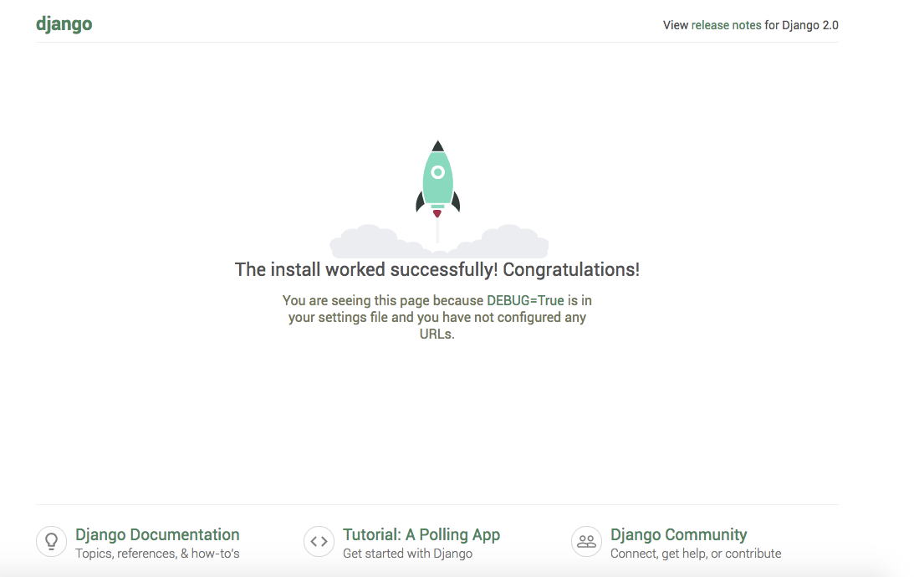

Last Updated: 15-07-2019
How to Install Django for Mac
Step 1. Install brew.
Open Terminal and copy and paste the code below.
$ /usr/bin/ruby -e "$(curl -fsSL https://raw.githubusercontent.com/Homebrew/install/master/install)"
This will install homebrew on your mac. Then you can check the version of brew by using the following command.
$ brew -v
Output: To test for a successful installation
$ brew -v
Homebrew 2.1.7
Homebrew/homebrew-core (git revision 0737; last commit 2019-07-15)
Step 2. Install Python via Homebrew
In the terminal type the following command to install Python.
$ brew install python3
Check and see if Python is installed on your system.
$ python3 --version
Step 3. Install Pip management systems.
$ sudo easy_install pip3
Step 4. Install VirtualEnv for Python.
$ sudo pip3 install virtualenv
Create the virtual environment. In my case, My virtualenv folder name is thanos.
$ virtualenv thanos
Now enter the folder.
$ cd thanos
Now activate the virtual environment by typing the following command.
$ source bin/activate
Now the terminal should look like this.
Step 5. Install Django in Mac.
While still being in that folder, type the following command.
$ sudo pip3 install django==2.0.3
Type this command to check the Django version.
$ python3 -django --version
Step 6. Create the Django project.
Installing the skeleton of the Django project.
$ django-admin startproject thanosback
Next, go into that folder we just created.
$ cd thanosback
Now run the project server.
$ python3 manage.py runserver
It started the development server via Localhost:8000.

Congratulations you successfully installed Django.
Last Updated: 15-07-2019
How to Install Django for Windows
Step 1. Install Chocolatey.
First install Chocolatey by following the directions on this link
https://chocolatey.org/docs/installation
Step 2. Install Python.
To install Python, run the following command from the command line or from PowerShell:
C:\ choco install python
Step 3. Install Pip.
To install pip on your machine, go to https://pip.pypa.io/en/latest/installing/, and follow the Installing with get-pip.py instructions.
If you already have Pip then ignore the previous step.
Step 4. Install virtualenv and virtualenvwrapper.
Create the virtual environment for Django.
C:\ pip install virtualenvwrapper-win
C:\ mkvirtualenv myproject
Next activate the environment that you just created.
C:\ workon myproject
Step 5. Install Django
While in the environment "myproject", type the following command.
C:\ pip install django
This will download the latest release.
To verify the Django installation execute the following command.
C:\ django-admin --version